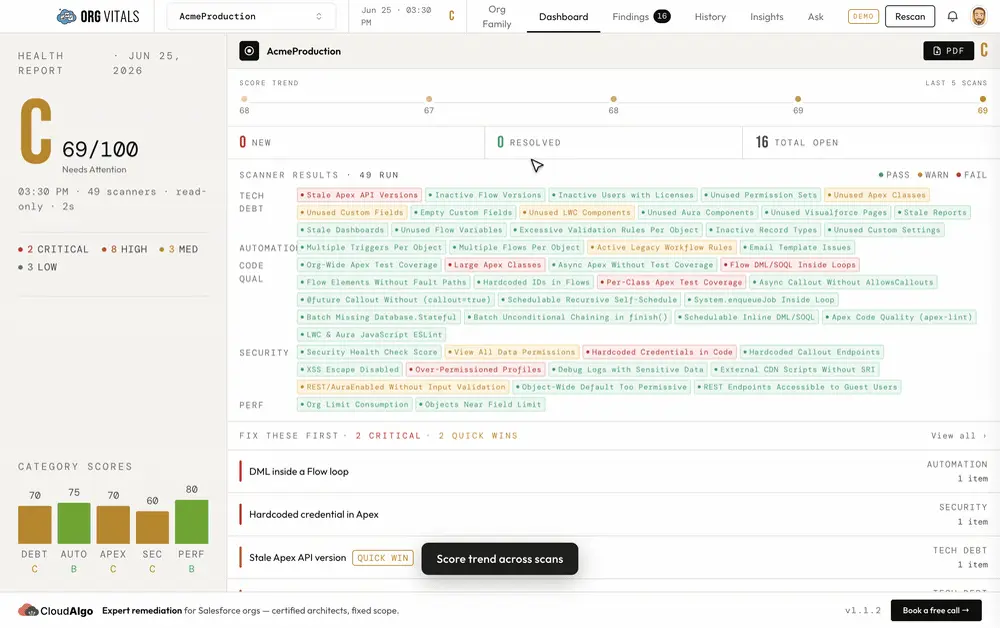

A health scanner for Salesforce orgs that runs on your machine, not ours.
Point it at any org you have already authenticated with the Salesforce CLI. It pulls a read-only metadata snapshot and runs 49 scanners across Security, Code Quality, Automation, Tech Debt and Performance, then grades the org A–F and ranks what to fix first. Nothing is written back to Salesforce, and the snapshot never leaves your disk.
How the grade is weighted
- Security 30%
- Code quality 20%
- Automation 20%
- Tech debt 20%
- Performance 10%
- 49 scanners
- A–F grade
- Findings triage
- Dependency graph
- Cross-org compare
- Ask Vita
Health report · 49 scannersJun 25, 2026
C 69/100 Needs attention
2Critical
8High
3Med
3Low

- Runs on
- macOS · Windows · Linux (Electron)
- Org access
- Salesforce CLI — read-only, no write scopes
- Storage
- Local SQLite snapshot, stays on device
- Scan time
- A full org scans in minutes
- AI
- Opt-in, your own Anthropic key